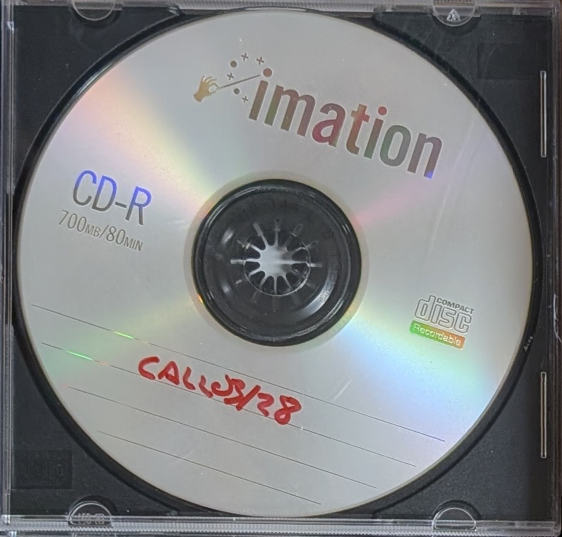
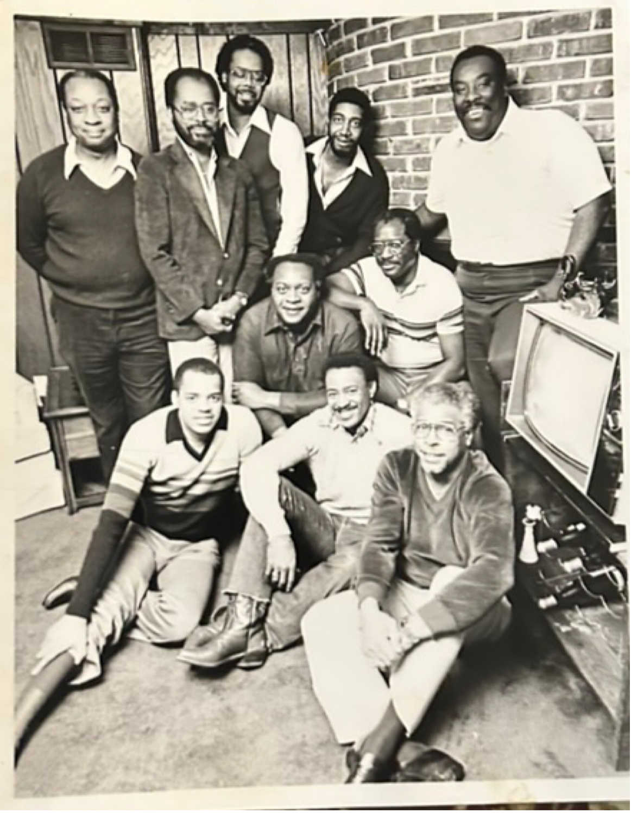

The Kansas City Call Archives: Monday Nite Footballers
An exploration of life in Kansas City.

Archives
Recovering the Voice of a City
The Monday Nite Footballers were more than a social club; they were a microcosm of Kansas City's shifting social landscape. Founded in the wake of the urban renewal projects of the late 60s, this group created a third space that transcended the simple fandom of the gridiron.
Through newspaper articles from the Kansas City Call, we are telling the story of community and camaraderie in Kansas City.
The 1970-1979 Folio
A curated selection of primary sources and statistical research
The Sunday Afternoon Broadcast Ritual
Analyzing the migration of social behavior from local pubs to private living rooms in the late 70s.
Geography of Fandom: The 18th & Vine Connection
A mapping of jazz-era legacies surviving through sport-related social organizations.
The Personnel Archive: Portraits of the Founders
Restored polaroids and personal accounts from the surviving members of the 1974 collective.
"We are not merely looking back at a game, but at the tapestry of a city that found its voice in the huddle and its heart in the stands."